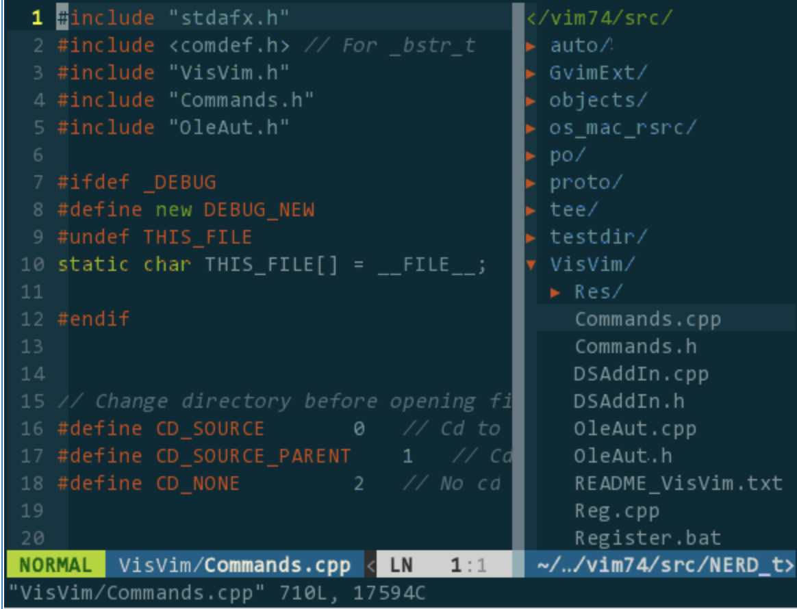

经过几个礼拜的实习，终于有点熟悉公司的环境了。我在公司的工作环境大致如下:
- 语言: 主要使用 c++, 还会有一些 lua、go 等语言
编辑器: vim
编译器: gcc, 编译时使用 Makefile
版本控制: git、svn, 代码的管理主要通过 git, 配置文件的管理主要通过 svn
调试工具: gdb
从刚开始什么都不会，编码、调试什么的都无从下手，现在终于能够上手了。以下总结一下这几个礼拜中的一些心得，主要是一些开发时的技巧.(以下截图都是网上找的，因为公司代码不方便放出来～)
# 1.vim
当初觉得 vim 真的很难用，我们用的是 macOS, 所以当初准备用 xcode 或者 sublime 来编码，然后编译完传到服务器上。但实际操作时发现，这样是无法实现的.
首先，我们的项目实在过于庞大，光编译和运行就分别得用将近 10 分钟，想本地编码和编译然后上传服务器本身就是一件效率很低的事情。而且实际项目运行环境是 linux, 我们的项目中也有用到 linux 的库，所以在 macOS 上是无法编译运行的。所以最高效的方法还是直接在远程主机上使用 vim 编码.
在使用了一段时间 vim 后，接触到一些技巧后，会发现 vim 其实也可以像一款 ide 一样。这里有一篇很棒的文章: 所需即所获：像 IDE 一样使用 vim. 介绍了很多 vim 使用的配置和插件，对安装和使用方法介绍的很好。所以接下来我就大概简单地介绍下我用到的.
以下是我一些常用的插件或技巧:
# vundle
vundle 是 vim 下一个管理插件的一种方式。可以通过在 vim 配置文件中添加插件的声明来安装 vim 插件，有点类似于 java 项目中的 maven, 对于插件管理非常有帮助
# NERDTree
NERDTree 是一款 vim 的插件，可以以可视化的方式查看文件，并可以对文件进行新建、删除等简单操作。同时 nerdtree 也可以支持多文件分屏浏览.

<center>nerdtree</center>
# YCM
YCM (YouCompleteMe) 是一个静态代码分析工具，非常好用。它可以像 ide 一样智能提示，实现自动补全。同时，他可以检查出代码中的语法错误，错误代码会高亮显示，并在行首有 ">>" 提示符，虽然实际用下来感觉能报的错很有限.

<center>ycm</center>
# ctags
ctags 可以对项目中的变量、函数、类生成 tags, 通过 tags 你可以在代码中选择跳转到光标所在的变量、函数、类定义的地方。但他不方便的地方在于每次写完代码需要重新生成，否则跳转时可能回到错误的地方.
# 2.gdb
# gdb -pid
以前只用过 gdb 直接编译运行代码，在大型项目中是无法实现的。这时候要需要使用 gdb 的 - pid 参数.
使用 gdb -pid 进程号 指令便可以 attach 到运行中的 c++ 项目，之后操作便和正常 gdb 一样了.
# stl
在调试时，常常需要检查 stl 的内容，当容器中内容较多时，无法很好地去查看内容。此时，可以使用这篇文章中的技巧，便可以查看 stl 容器中内容了～